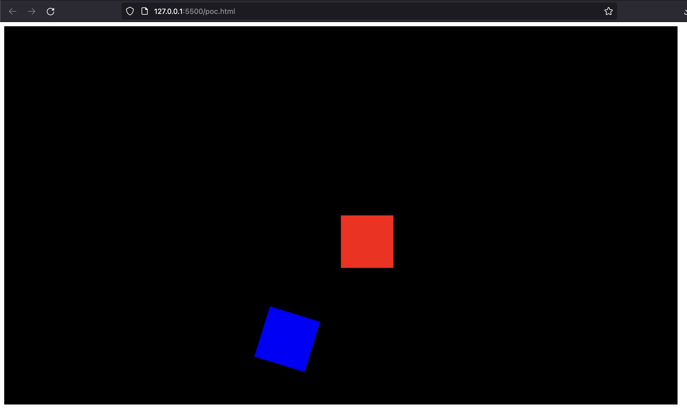
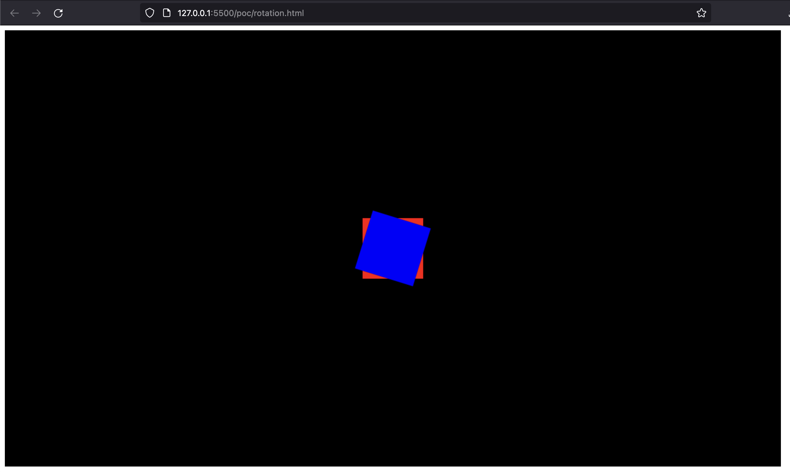

Player Control
Our desired mechanic is to rotate the player with the left/a and right/d keys, and move them in the direction they're facing with a rocket-like propulsion force. They should continue moving through space in their current direction unless another force acts upon them.
First, let's deal with the rotation. We're making extensive use of the fillRect method to draw our character. This method does not present us with an option to rotate the rectangle. To solve this, we could calculate the positions of all our rectangle vertices, then create and fill a path, but there's a much easier way. We can instead rotate the canvas itself, draw our character the way we always have, then reset the canvas' rotation to continue drawing normally. Let's take a look at how this might work with a little proof of concept.
// setup
const canvas = document.querySelector("canvas");
const ctx = canvas.getContext("2d");
ctx.fillStyle = "black";
ctx.fillRect(0, 0, canvas.width, canvas.height);
const squareDimensions = 100;
// normal centered square
ctx.fillStyle = "red";
ctx.fillRect(canvas.width / 2 - squareDimensions / 2, canvas.height / 2 - squareDimensions / 2, squareDimensions, squareDimensions);
// rotated centered square?
ctx.fillStyle = "blue";
ctx.rotate(0.3);
ctx.fillRect(canvas.width / 2 - squareDimensions / 2, canvas.height / 2 - squareDimensions / 2, squareDimensions, squareDimensions);

This looks all wrong. What happened here? Why isn't our square in the middle of the canvas? The canvas rotation takes place around its origin, in this case the top left corner. If we want it to rotate our square around its center instead, we'll have to translate our canvas origin first.
// rotated centered square
ctx.fillStyle = "blue";
ctx.translate(canvas.width/2, canvas.height/2);
ctx.rotate(0.3);
ctx.fillRect(-squareDimensions/2, -squareDimensions/2, squareDimensions, squareDimensions);

That's much better. Now that we know how this works, we can apply this to our player. We'll give our player an rotation property starting at 0. We'll also give the player a rotationSpeed property so we'll know how much to rotate the player each frame. Since all our measurements are going to be scaled by dts (delta time in seconds), this value will represent a number of radians per second. (Remember that all of our angular measurements are in radians, not degrees). A full circle is 2π radians, so that's an easy value for us to start with, one full rotation every second.
rotation: number = 0;
rotationSpeed: number = Math.PI * 2;
Now we can update the player's rotation whenever the appropriate keys are pressed. Let's move all our keypress detection stuff out of main.ts and into our player class for now so we don't have to worry about importing or injecting it, then get rid of all our old movement code since we won't be using it. Also, since our player is going to be adding some updating logic in addition to its drawing logic, lets create an update method to hold this and call it in the animate method along with player.draw(). It will need dts to be passed in as an argument to scale our movements. Here's what our code looks like up to this point.
// main.ts
import { Player } from "./Player";
import "./style.css";
const canvas = document.getElementById("game-canvas") as HTMLCanvasElement;
canvas.width = 1280;
canvas.height = 720;
const ctx = canvas.getContext("2d") as CanvasRenderingContext2D;
let lastTime = 0;
const player = new Player(ctx);
requestAnimationFrame(animate);
function animate(ms: number) {
requestAnimationFrame(animate);
const dt = ms - lastTime;
const dts = dt / 1000;
lastTime = ms;
ctx.clearRect(0, 0, canvas.width, canvas.height);
player.update(dts);
player.draw();
}
// Player.ts
import { Vec2 } from "./Vec2";
type Keys = {
up: boolean;
left: boolean;
right: boolean;
};
export class Player {
width: number = 50;
height: number = 25;
rotation: number = 0;
rotationSpeed: number = Math.PI * 2;
keys: Keys = {
up: false,
left: false,
right: false,
};
pos: Vec2;
ctx: CanvasRenderingContext2D;
constructor(ctx: CanvasRenderingContext2D) {
this.ctx = ctx;
this.pos = new Vec2(ctx.canvas.width / 2, ctx.canvas.height / 2);
// keydown listener...
// keyup listener...
}
update(dts: number): void {
// TODO
}
// draw method...
}
Handling the logic of rotation here will be pretty simple.
update(dts: number): void {
if (this.keys.right) this.rotation += this.rotationSpeed * dts;
if (this.keys.left) this.rotation -= this.rotationSpeed * dts;
}
We won't see these changes reflected on the screen until we update our draw method as well.
draw(): void {
this.ctx.save();
this.ctx.translate(this.pos.x, this.pos.y);
this.ctx.rotate(this.rotation);
// the rest of our existing code...
}
Now when we press left/a and right/d:
Now let's get the forward motion worked out. We are going to use Euler integration for to make this happen. The concept is simple. Our player, (or any other entity that we want to move), has a position vector, a velocity vector, and an acceleration vector. Position represents a location on our canvas (obviously). Velocity represents a change in our position. Acceleration represents a change in our velocity. Each frame, we will update our position by adding the acceleration to the velocity, then adding the velocity to the position. Let's see this in action. First, we'll give our player velocity and acceleration properties, then put Euler integration logic into our update method.
// ...
vel: Vec2 = new Vec2(0, 0);
accel: Vec2 = new Vec2(0, 0);
// ...
update(dts: number): void {
if (this.keys.right) this.rotation += this.rotationSpeed * dts;
if (this.keys.left) this.rotation -= this.rotationSpeed * dts;
if (this.keys.up) {
this.applyPropulsionForce();
}
this.vel.add(Vec2.scale(this.accel, dts));
this.pos.add(Vec2.scale(this.vel, dts));
this.accel.scale(0);
}
We're applying a propulsion force, (we'll get to this in a moment), which will update our player's acceleration, then we add this acceleration (scaled by dts) to our velocity, then we add our velocity (scaled by dts) to our position. At the very end, we'll reset our acceleration to 0, (otherwise, we'll only add to it every single frame and we'll soon rocket out of control). Let's look at adding our propulsion force.
private applyPropulsionForce(): void {
const force = Vec2.fromAngle(this.rotation);
force.scale(this.propulsionForce);
this.accel.add(force);
}
Since we want to propel our player in the direction we're facing, we first have to get a vector that points in that direction. That's what our Vec2.fromAngle method accomplishes. It's going to create a unit vector (we only care about the direction right now) pointing the way our player is facing. (We'll see how that's done after we finish going through this method). Now that we have the direction worked out, we need to set just how much propulsion force we're going to generate by manipulating the vector's magnitude. We'll give the player a propulsionForce property, and we can tweak this value until the movement feels good to us. (I've started mine at 1000). Now that we have both the direction and the magnitude of our propulsionForce in place, we'll add this to our acceleration.
Now, how can we generate a vector from an angle? For this, we can do some basic trigonometry.

Our direction vector will form a right triangle with the x and y axes of our canvas, which allows us to perform trigonometric calculations. Our vectors x coordinate lies at the end of the adjacent side and its y coordinate lies at the end of the opposite side. So we need to find the length of the adjacent for our x coordinate and the length of the opposite for our y coordinate. We're going to create a unit vector, which has a magnitude of 1. The hypotenuse of our right triangle represents our vector, so we know that the hypotenuse will have a length of 1. We also know the angle we're calculating for. We now have all the information we need to find the lengths of the opposite and adjacent sides. sin(angle) = opposite / 1 and cos(angle) = adjacent / 1. We can simplify this to say that sin(angle) = opposite and cos(angle) = adjacent. If this doesn't make complete sense, here's a more in depth explanation. Let's add this method to our Vec2 class.
static fromAngle(angle: number, magnitude: number = 1): Vec2 {
const v = new Vec2(Math.cos(angle), Math.sin(angle));
v.scale(magnitude);
return v;
}
We can actually add a parameter here to take care of scaling our vector to the size we want, as a matter of convenience, so we don't have to scale it separately each time we use it. Let's go back and use this in our addPropulsionForce method.
private applyPropulsionForce(): void {
const force = Vec2.fromAngle(this.rotation, this.propulsionForce);
this.accel.add(force);
}
All the pieces are in place! Let's move!
Because we're not resetting our velocity after each frame, we will retain our momentum, simulating drifting through space, exactly as we want.
Unfortunately, it doesn't take us long at all to fly right off the screen, never to be seen or heard from again. Let's fix that by allowing us to wrap back to the other side of the screen if we go out of bounds.
private screenWrap(): void {
const canvas = this.ctx.canvas;
if (this.pos.x > canvas.width) {
this.pos.x = 0;
} else if (this.pos.y > canvas.height) {
this.pos.y = 0;
}
if (this.pos.x < 0) {
this.pos.x = canvas.width;
} else if (this.pos.y < 0) {
this.pos.y = canvas.height;
}
}
We'll add this to the end of our updatemethod. If our position on either axis is out of bounds, we just set it to the opposite boundary.
Our controls are almost perfect now. We just have one more problem to resolve, and that is that there's nothing stopping us from accelerating indefintely, going faster and faster until the game is no longer playable. We're going to implement a maximum velocity for the player in order to avoid this.
// ...
maxVel: number = 800;
// ...
update(dts: number): void {
// ...
this.vel.add(Vec2.scale(this.accel, dts));
if (this.vel.mag() > this.maxVel) {
this.vel.setMag(this.maxVel);
}
this.pos.add(Vec2.scale(this.vel, dts));
this.accel.scale(0);
this.screenWrap();
}
We're just checking the magnitude of our velocity vector and setting back to the maximum if it ever goes past it.
And that's it! Our character movement is complete. Of course you can tweak the rotationSpeed, propulsionForce, and maxVel to your taste.
Right now, we're just flying around space by ourselves. As much fun as that is, it would be even better if we had some enemies to battle. We'll start adding that next.
Previous Next